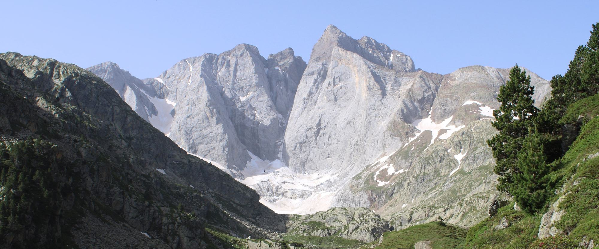
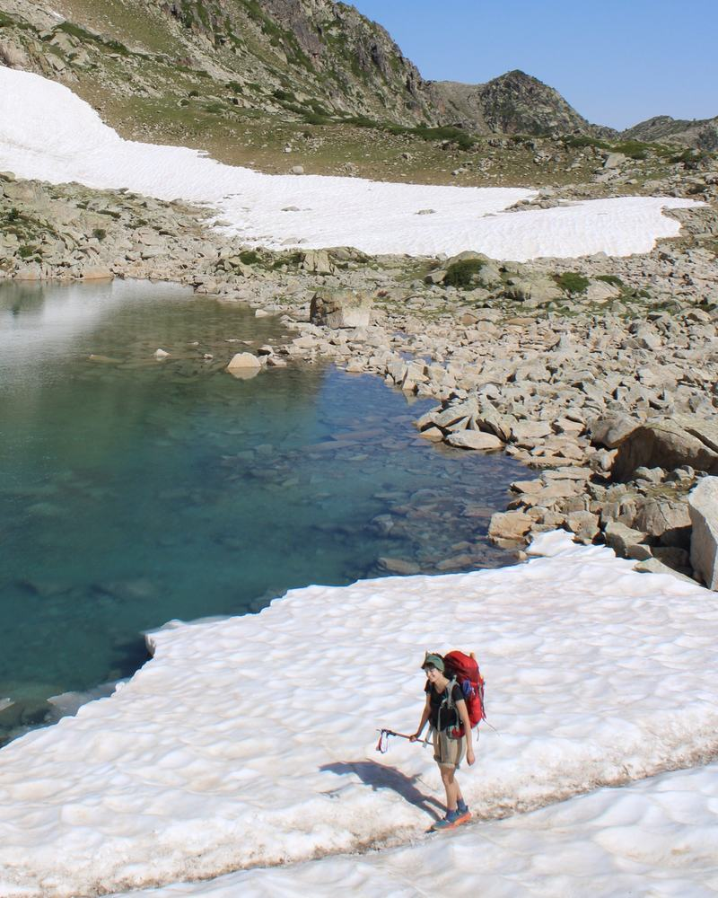
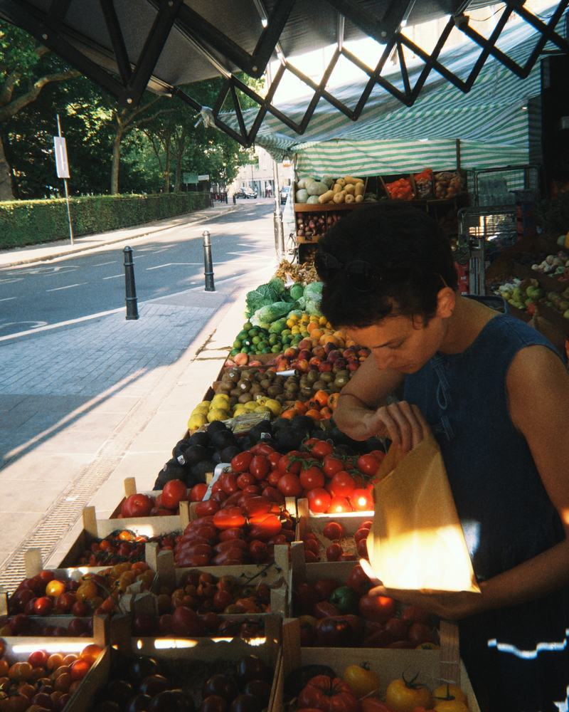
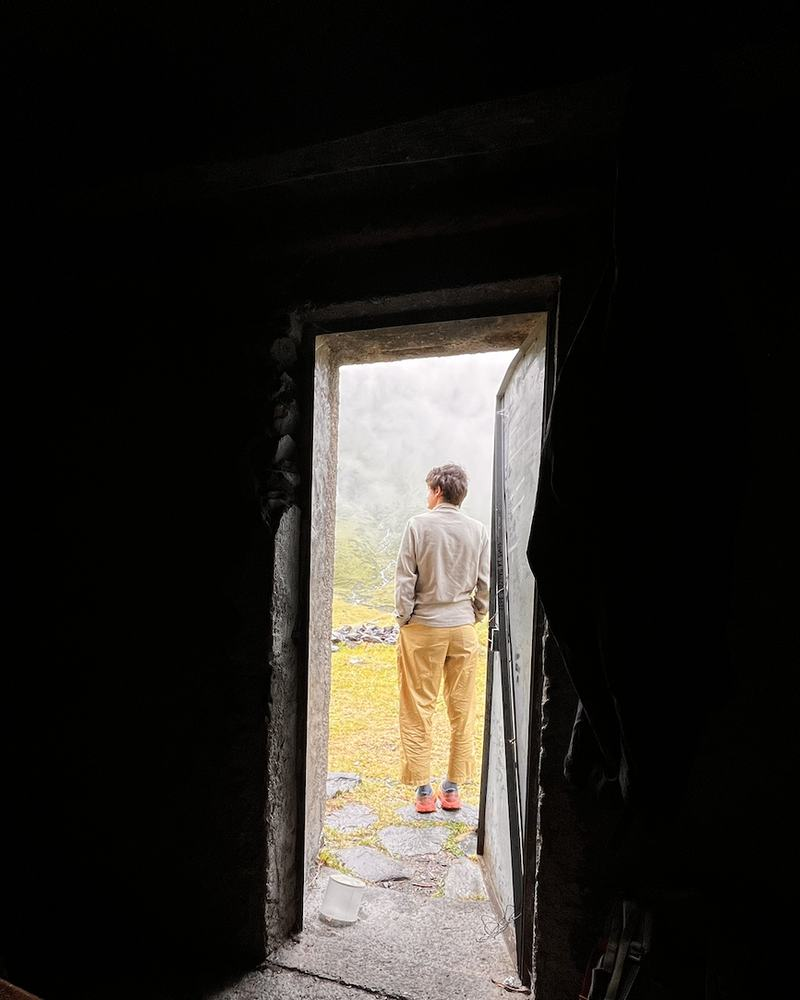

About
About
I am a PhD student in Environmental Economics at the London School of Economics and Political Science (LSE) and the Grantham Research Institute on Climate Change and the Environment, under the supervision of Marion Dumas and Richard Perkins.
Before joining LSE in September 2025, I completed an MPhil in Politics at the University of Oxford under the supervision of Federica Genovese, and I hold a BA in Philosophy & Economics from the University of Bayreuth, Germany. As a trained economist and political scientist, I possess a wide skill set, ranging from classical quantitative and qualitative methods to machine learning, which I apply to questions of climate and energy policymaking.
I am generally interested in collaborations on research and policy work, and I am also keen to pursue a part-time position outside academia focused on policy or energy modelling. Feel free to reach out if you are interested. You can find my CV here.
In my free time, I hike, cook, knit, climb, cycle, run and read. I live and work in London.


